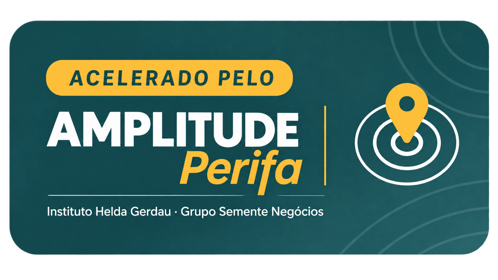
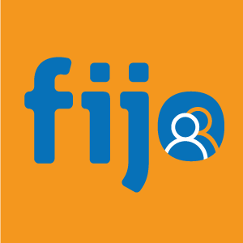
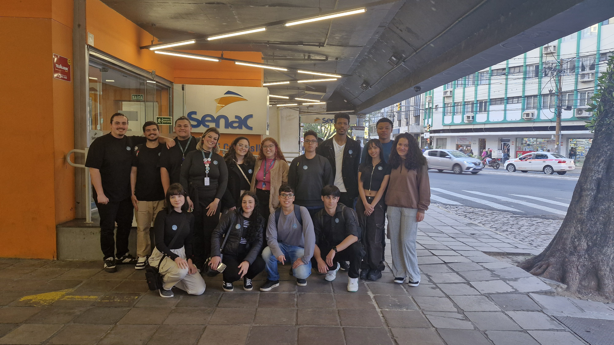
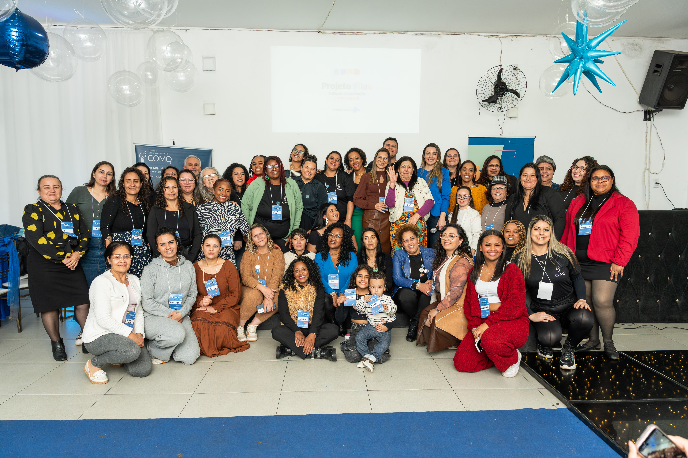

.jpeg)
Missão
Conectar jovens e empreendedores do bairro Mário Quintana a oportunidades de desenvolvimento pessoal e profissional, promovendo transformação social por meio da educação e do trabalho.
O COMQ — Centro de Oportunidades do Bairro Mário Quintana conecta jovens e empreendedores a oportunidades de emprego, capacitação, geração de renda e desenvolvimento comunitário. Acreditamos na potência do território e nas oportunidades que podem transformar trajetórias.
O COMQ — Centro de Oportunidades do Bairro Mário Quintana é uma iniciativa comunitária que conecta pessoas, organizações e oportunidades, promovendo o desenvolvimento da juventude, o empreendedorismo feminino e o fortalecimento comunitário.

Conectar jovens e empreendedores do bairro Mário Quintana a oportunidades de desenvolvimento pessoal e profissional, promovendo transformação social por meio da educação e do trabalho.
Ser reconhecido como uma referência em geração de oportunidades, contribuindo para a redução das desigualdades sociais e o desenvolvimento do território.
Compromisso com a comunidade, protagonismo, inclusão e diversidade, inovação, colaboração e desenvolvimento territorial.
Trabalhamos em três frentes conectadas às necessidades e às potências do território.
Conectamos jovens a oportunidades de emprego, aprendizagem, capacitação e desenvolvimento profissional, aproximando a comunidade do mercado de trabalho.
Fortalecemos mulheres empreendedoras por meio de conexões, capacitações, oportunidades de comercialização e desenvolvimento de negócios.
Promovemos mobilização, articulação territorial, participação cidadã e fortalecimento das conexões comunitárias.
Desde 2024, conectamos pessoas, conhecimentos e oportunidades para fortalecer o desenvolvimento do território.
Jovens conectados ao mercado de trabalho desde 2024.
Volume movimentado nas feiras do projeto Empreende MQ, no período de dezembro de 2025 a dezembro de 2026.
Carga horária de encontros, cafés, cursos e outras atividades formativas realizadas com jovens e empreendedoras.
Atendimentos de orientação profissional, acompanhamento e apoio à empregabilidade de jovens da comunidade. O indicador considera atendimentos recorrentes, incluindo retornos e acompanhamentos, e não representa necessariamente 500 pessoas diferentes.

O COMQ integra o Amplitude Perifa 2026, iniciativa do Instituto Helda Gerdau, realizada pelo Grupo Semente Negócios. O programa fortalece negócios periféricos de impacto socioambiental por meio de formação, acompanhamento e conexões estratégicas.
Essa participação representa uma etapa importante no desenvolvimento institucional do COMQ, contribuindo para aprimorar a gestão, fortalecer a sustentabilidade e ampliar nossa capacidade de atuação no território.
Conheça o programa →Iniciativas, empresas e organizações que acreditam no potencial das pessoas e na força das oportunidades.


Sua organização pode fazer parte da construção de novas oportunidades no território. Ao estabelecer uma parceria com o COMQ, sua empresa contribui para o desenvolvimento comunitário e fortalece conexões entre pessoas, organizações e oportunidades.

O desenvolvimento de uma comunidade acontece por meio de pessoas que compartilham conhecimentos, experiências e tempo. No COMQ, cada contribuição ajuda a ampliar oportunidades, fortalecer iniciativas e construir novas possibilidades para o território.
Seja voluntário e faça parte dessa transformação.
Quero ser voluntário →Oportunidades na palma da mão da comunidade. Encontre a iniciativa que combina com seu momento.

Se você tem entre 15 e 23 anos e busca oportunidades de emprego, aprendizagem, capacitação e desenvolvimento profissional, faça parte da rede de oportunidades do COMQ.
Quero participar →
Se você é empreendedora e quer ampliar sua rede de contatos, participar de formações e encontrar novas oportunidades de geração de renda, venha fazer parte.
Quero participar →